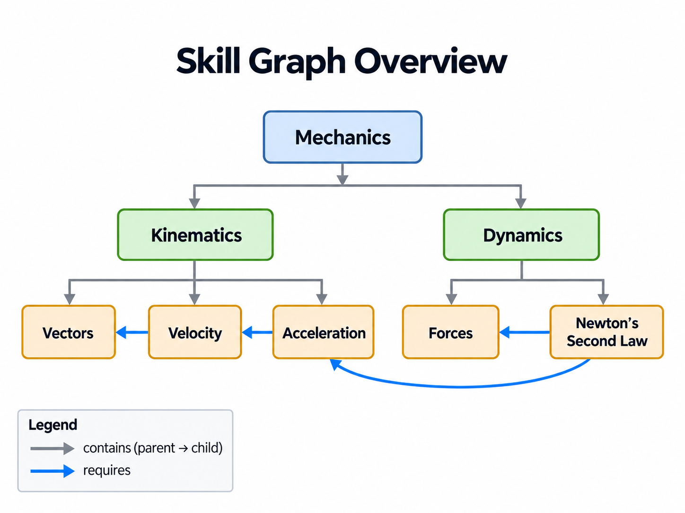
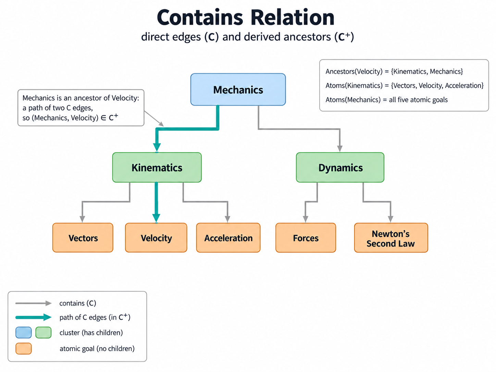
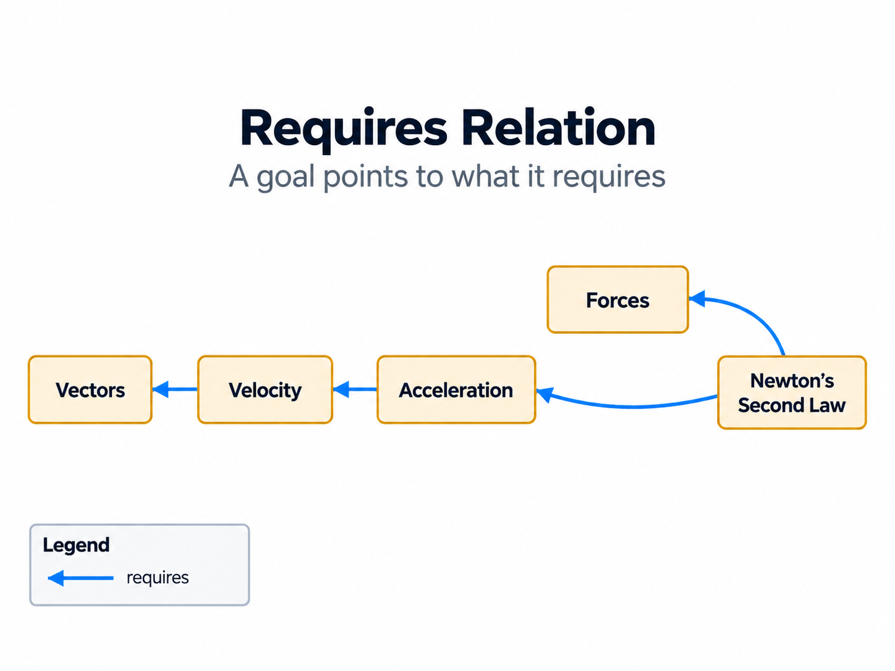
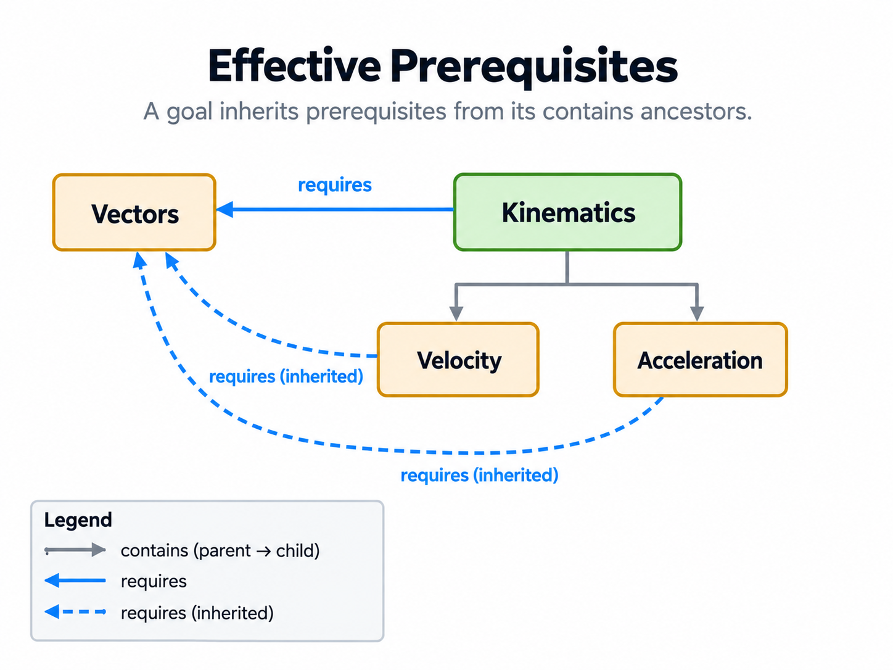
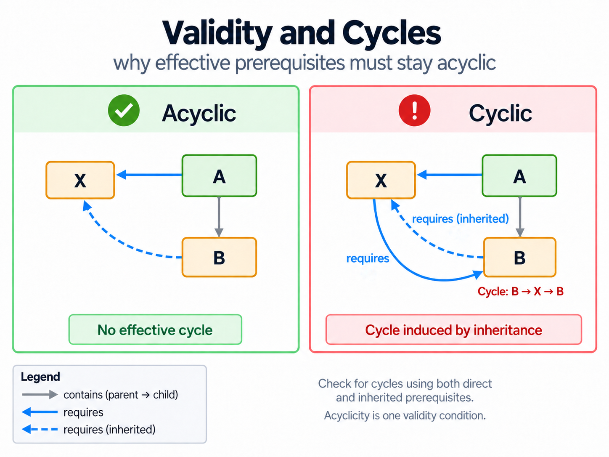
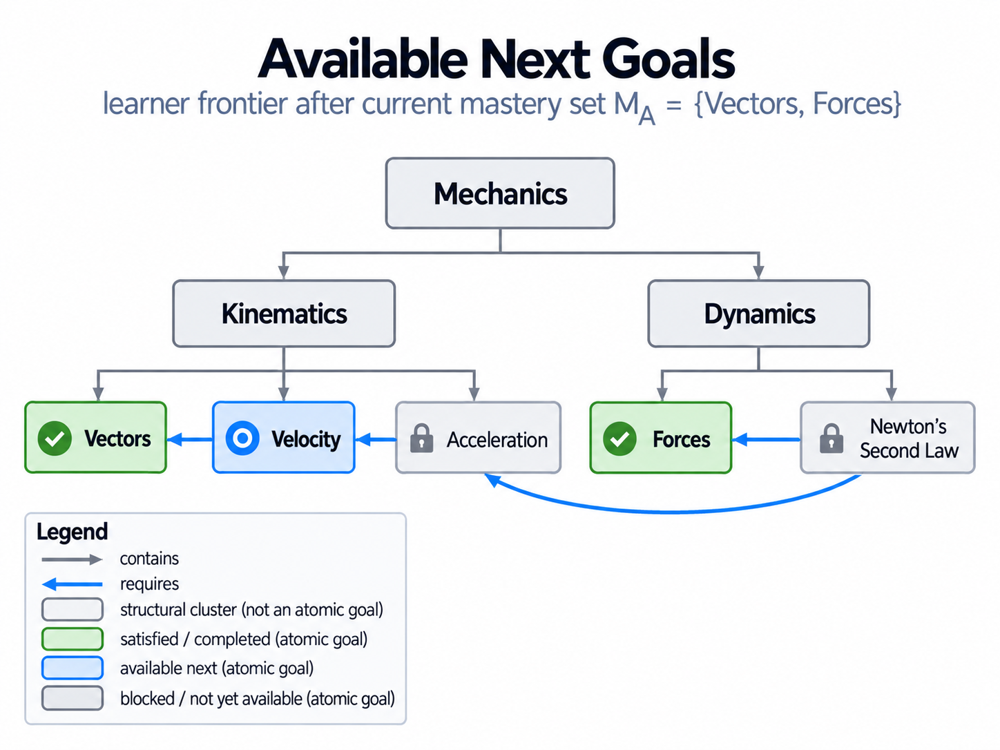

SkillPilot Skill Graph Specification
SkillPilot models learning goals and their relationships as a graph. Contains describes how goals are grouped into a hierarchy. Requires identifies the prerequisites that must be satisfied before a goal can be attempted. Grouping alone does not establish a prerequisite.
This specification defines goal attributes, both relations, their derived semantics—including inherited prerequisites—and the conditions for graph validity. It provides a common mathematical foundation so that independent implementations interpret and validate the same graph consistently.
This specification covers the skill graph itself. Projection contracts for user-facing trees that additionally involve programUnits, goalPlacements, or competency catalogs are specified separately in View Projection and Goal Placement.
Layering, migration strategy, and canonical rollout policy are specified separately in General Goal System and Migration and Canonical Gymnasium Rollout Policy.
Normative definition. This document defines the skill graph’s semantics and validity requirements.
Implementation checks. The currently enforced CI validator profile—including rollout severity levels and runtime rule identifiers—is documented in Graph Validation Rules. Legacy metadata such as
phasemay still exist in repositories, but it is not part of the canonical graph semantics unless explicitly specified below.Outside this specification. Cross-landscape
requirescontracts, learner-facing curriculum bundles, and scope-specific composition-view files belong to higher-level composition contracts outside the single-landscape skill graph.
Illustrations. The figures are explanatory examples, not a curriculum or additional requirements. The formal definitions and normative statements remain authoritative.
Reading key. Read each relation arrow as “source — relation → target”. A
containsarrow points from parent to child; arequiresarrow points from a goal to its prerequisite. Solid prerequisite arrows are labelledrequires; dashed prerequisite arrows are labelledrequires (inherited)and are derived from contains ancestors. Colour distinguishes the relation or its evaluation status, as specified in each figure’s legend. A learning-flow view uses the inverse ofrequiresand explicitly labels that inverse direction.
Figure 1. Skill graph overview — non-normative example.

How to read it: Grey arrows group Vectors, Velocity and Acceleration under Kinematics. The blue arrow Velocity → Vectors means that Velocity directly requires Vectors. Newton’s Second Law requires both Forces and Acceleration; its two outgoing requires arrows do not represent alternatives. All four blue arrows are direct requirements. Goals without contains children are atomic; the other goals are clusters.
Scope note: The physics labels are abbreviated examples, not a complete, reviewed curriculum. Node colours in this structural overview distinguish hierarchy levels, not learner achievement. The illustrated tree is only one possible hierarchy; §4.2 also allows multiple parents.
1. Notation and conventions
- \(G\) is a finite set of goals (also called skills or nodes).
- A binary relation \(X \subseteq G \times G\) is a set of ordered pairs \((a,b)\). A relation arrow \(a \to b\) represents the ordered pair \((a,b)\) in the named relation.
- The inverse relation is \(X^{-1}=\{\,(b,a)\mid(a,b)\in X\,\}\). An inverse view reverses the direction of each relation arrow; it does not introduce independently authored facts.
- For any relation \(X\), \(X^+\) denotes its transitive closure. A pair \((a,b)\) belongs to \(X^+\) iff there is a directed path from \(a\) to \(b\) consisting of one or more edges in \(X\). In particular, \(X \subseteq X^+\). Paths of length zero do not count.
- A directed graph \((G,X)\) is acyclic iff there is no \(g \in G\) such that \((g,g)\in X^+\).
- A total mapping \(f:S\to T\) assigns exactly one value in \(T\) to every element of \(S\). A partial mapping \(f:S\rightharpoonup T\) may be undefined for some elements of \(S\); \(dom(f)\subseteq S\) denotes the set of elements for which it is defined.
2. Goals and attributes
Each goal \(g \in G\) is a distinct entity.
2.1 Attribute domains
- \(\text{UUID}\): the set of UUID values.
- \(\Sigma^*\): the set of finite strings over an alphabet \(\Sigma\).
- \(\mathbb{R}_{>0}\): strictly positive real numbers.
- \(P_{compat}\): a set of legacy compatibility labels that may be serialized in repository-specific metadata fields such as
phase.
2.2 Attribute mappings
Each goal \(g\in G\) has the following attributes:
- \(Id: G \to \text{UUID}\)
- \(Title: G \to \Sigma^*\)
- \(Weight: G \to \mathbb{R}_{>0}\)
Implementations MAY additionally expose an optional stable cross-layer reference:
- \(ShortKey: G \rightharpoonup \Sigma^*\)
Interpretation:
ShortKeyis an optional stable ASCII-style identifier for cross-layer references, exports, APIs, and similar non-graph-facing integration pointsShortKeydoes not replaceId;Idremains the canonical identity of a goal
Implementations MAY additionally expose optional compatibility/view metadata:
- \(PhaseCompat: G \rightharpoonup P_{compat}\)
Interpretation:
- current repositories may still serialize this metadata under the field name
phase - this metadata is optional and semantically unstable across domains
- it may support display badges, coarse filtering, migration compatibility, or legacy tooling
- it is not part of the canonical goal-graph semantics
- it does not participate in the required validity conditions of this specification
- phase-based validator checks, if a repository still uses them, belong to the validator profile and not to the normative graph definition
Implementations MAY additionally expose optional cross-cutting metadata for scoped learner views.
One preferred structured form is a partial applicability mapping:
Interpretation:
Applicabilityis optional and may be absent on goals or even on whole landscapes- \(D\) is a set of filter dimensions
- \(V_d\) is the value vocabulary for dimension \(d\)
- this mapping is intended for node-local view projection and view validation, not as the primary authored source of truth
The normative filter semantics for such scoped views are defined in §11.
2.3 Identifier uniqueness
Identifiers MUST be unique:
2.3.1 Optional ShortKey uniqueness
If ShortKey is exposed, it MUST be unique within the logical landscape:
Interpretation:
ShortKeyis optional, but if present it is a secondary stable key and therefore must not collide between different goals of the same landscape- in repositories that serialize the same logical landscape into multiple locale files sharing one
landscapeId, this uniqueness requirement applies to the shared logical landscape, not merely to one file serialization - repeated
(goalId, ShortKey)pairs across locale serializations of the same landscape are therefore acceptable; collisions where the sameShortKeynames different goal IDs are not
2.4 Atomic and cluster goals (structural classification)
Once the direct containment relation \(C\) from §4 is fixed, the atomic/cluster split is defined canonically by the graph structure:
Interpretation:
- \(A\): the set of atomic goals
Goals with no directcontainschildren. - \(K\): the set of cluster goals
Structural aggregation goals with at least one directcontainschild.
Structural classification and quality assurance. Being atomic in this graph-theoretic sense does not by itself establish that a content goal represents a single assessable competence. That is evaluated separately by the Semantic Atomicity Review, tracked by CQR-301 in the Curriculum Quality Dashboard. Orientation, assessment and memory leaves are evaluated under their respective QA rules.
Implementations MAY store explicit atomic/cluster classification metadata, but if they do, it MUST agree with this derived classification.
This makes all later references to “atomic” and “cluster” portable across implementations.
3. Relations
The skill graph has two authored relations on \(G\):
contains, written \(C\): the hierarchy relation, directed from parent to childrequires, written \(R\): the prerequisite relation, directed from a goal to its prerequisite
Both record direct relationships between a goal and its referenced goals. Ancestor/descendant relationships, inherited prerequisites, effective prerequisites and prerequisite reachability are derived from these relations; they are not additional authored relation types.
4. Contains relation
4.1 Definition
The Contains relation is a binary relation:
\((p,c)\in C\) means parent \(p\) directly contains child \(c\). A contains arrow points from \(p\) to \(c\). Containment groups goals; it does not establish a prerequisite or a learning order.
Note: \(C\) records the directly authored contains pairs. Ancestor/descendant relationships are derived via the transitive closure \(C^+\), which includes paths of one or more edges.
Edges in \(C\) are interpreted as hierarchical grouping (e.g., topic cluster contains atomic goal).
4.2 Containment constraint (polyhierarchy)
\((G,C)\) MUST be acyclic (containment cannot contain cycles):
This allows multiple parents per node (a polyhierarchy).
If you want a strict tree/forest, see the recommended rule in §8.3.
4.3 Ancestors and descendants
Define:
For later progression semantics, define the atomic basis of a goal:
Interpretation:
- for an atomic goal, its basis is itself,
- for a cluster goal, its basis is the set of atomic descendants whose mastery witnesses satisfaction of that cluster in set-based progression semantics.
Non-empty atomic basis. For every goal \(g\in G\), \(Atoms(g)\) is non-empty: an atomic goal has basis \(\{g\}\), and every cluster in a finite acyclic contains graph has at least one atomic descendant. A goal without contains children is atomic (§2.4), not an empty cluster.
Figure 2. Direct and indirect containment — non-normative example.

How to read it: Every hierarchy arrow is one direct edge in \(C\), pointing from parent to child. Mechanics directly contains Kinematics and Dynamics; Kinematics contains Vectors, Velocity and Acceleration; Dynamics contains Forces and Newton’s Second Law. The teal path Mechanics → Kinematics → Velocity consists of two \(C\) edges, so Mechanics is an ancestor of Velocity although no direct contains edge joins them. The highlight follows the existing edges; it is not an additional relation.
Scope note: \(C^+\) relates the endpoints of paths consisting of one or more \(C\) edges, including single direct edges. Goals without contains children are atomic and the others are clusters (§2.4). The atomic basis of a cluster is the set of its atomic descendants. The figure uses the same small hierarchy as Figure 1; it is not a complete curriculum subtree.
5. Requires relation
5.1 Definition
The Requires relation is a binary relation:
\((g,p)\in R\) means goal \(g\) directly requires prerequisite \(p\).
Equivalently, \(p\) is a direct prerequisite of \(g\). A requires arrow points from \(g\) to \(p\) and is read “\(g\) requires \(p\)”. In a serialized goal record, requires lists the referenced goals that the record’s goal directly requires.
Multiple outgoing requires edges are conjunctive: a goal requires all the prerequisites to which it points, not a choice among them. Satisfaction and scoped availability are defined in §9 and §11.
A learning-flow view depicts the inverse relation \(R^{-1}\): an arrow \(p\to g\) is read “\(p\) is a direct prerequisite for \(g\)”. Such a view explicitly identifies itself as inverse of requires and does not label its arrows simply requires. It is derived from the same prerequisite facts, not authored as a separate dependency relation. An individual prerequisite-for arrow does not imply that satisfying its source alone makes the target available.
Figure 3. Direct prerequisites — non-normative example.

How to read it: Read each blue arrow from its source to its arrowhead: “this goal requires that prerequisite”. Velocity requires Vectors; Acceleration requires Velocity; Newton’s Second Law requires both Forces and Acceleration. The curved arrow to Acceleration is a direct requirement, just like the straight arrows.
Scope note: A chain of requires edges expresses transitive prerequisite reachability without an additional direct edge. It is not contains-based inheritance. The position of a box does not change the relation’s direction: these arrows point to prerequisites, not along learning flow.
5.2 Canonical modeling target (recommended)
The formal model allows direct prerequisite edges between arbitrary goals in \(G\).
However, for high-quality and mature curricula, the canonical prerequisite layer SHOULD primarily live between atomic goals:
Interpretation:
- atomic goals carry the precise didactic sequencing logic,
- cluster goals remain useful for navigation, filtering, and aggregation,
- cluster-level
requiresedges are best treated as a transitional authoring aid or as an intentionally strong universal statement.
If a direct prerequisite is authored on a cluster goal, it is stronger than a mere summary: under the semantics in §6 it constrains descendants via inheritance.
Quality-assurance requirements. In the curriculum quality model, curriculum maturity M3 and above requires CQR-101, CQR-102 and CQR-103 to pass in every configured QA route scope. CQR-102 requires direct atomic-to-atomic route coverage; CQR-103 requires clusters selected by each scope's clusterSelector to have no direct requires. These scoped maturity gates do not by themselves prohibit every cluster-related edge in the full graph.
Graph Validation Rules defines the additional enforcement profiles. In particular, GVR-013 prohibits direct local requires from selected atomic goals to cluster prerequisites within its configured scope. A maturity level and a validator rule must be interpreted with their applicable scope, not as a repository-wide guarantee that \(R\subseteq A\times A\).
5.3 DAG constraint
\((G,R)\) MUST be acyclic:
6. Effective prerequisites
A goal’s requirements include its own direct prerequisites and the direct prerequisites declared by its contains ancestors. The effective prerequisite relation records all these applicable requirements in the direction goal → prerequisite.
Quality-assurance context. Contains-based inheritance supports modeling and compatibility where prerequisites are declared on clusters. The QA route gates described in §5.2 distinguish effective route coverage (CQR-101) from direct atomic route coverage (CQR-102) and the absence of direct requires on selected clusters (CQR-103). In a fully atomic-authored prerequisite graph, \(R_{\mathrm{effective}}=R\) (§6.3): the effective relation remains defined, but inheritance contributes no additional pairs. Longer prerequisite chains still apply through the transitive closure.
6.1 Effective prerequisite relation
Define \(R_{\mathrm{effective}}\subseteq G\times G\) by:
Interpretation:
- \(g\) requires \(p\) effectively when \(g\) declares that prerequisite itself or inherits it from a contains ancestor.
- Every direct requirement is also effective: \(R\subseteq R_{\mathrm{effective}}\). The same ordered pair occurs only once in a relation, even when there are several inheritance paths.
- Inheritance follows the contains hierarchy. It copies direct requirements declared by ancestors to their descendants; it does not copy requirements from prerequisite goals.
- \(R_{\mathrm{effective}}\) is computed by the inheritance rule, not by taking a transitive closure. Chains of requirements are evaluated using \(R_{\mathrm{effective}}^+\); this is distinct from contains-based inheritance.
Inherited prerequisite pairs. The additional pairs contributed by containment-based inheritance are:
Consequently:
The effective relation includes authored pairs; the inherited relation contains only additional pairs. Both derived relations use the same direction as requires: goal → prerequisite. Solid blue arrows labelled requires represent authored pairs; dashed blue arrows labelled requires (inherited) represent the additional inherited pairs. A figure may use another colour to indicate evaluation status, as stated in its legend.
Note (with multiple parents): A goal inherits requirements from all its contains ancestors, across every parent path. Multiple inheritance paths do not duplicate an ordered pair.
6.2 Effective prerequisite set
For convenience, define the set of effective prerequisites of a node:
Figure 4. Prerequisites inherited from a cluster — non-normative example.

How to read it: Kinematics directly requires Vectors. Because Kinematics contains Velocity and Acceleration, both children inherit that requirement. All three prerequisite arrows point to Vectors. The solid arrow is directly authored; the two dashed arrows are derived from containment. All three pairs belong to \(R_{\mathrm{effective}}\).
Scope note: This is a separate example from Figure 1: Vectors is not contained in Kinematics here. Adding that contains edge would make Vectors inherit a requirement for itself. For precise atomic-to-atomic authoring, see §5.2. Inherited requirements are distinct from prerequisite chains.
6.3 Relation to the canonical atomic model
When none of a goal’s contains ancestors declares an outgoing requires edge, the goal inherits no additional prerequisites. Its effective prerequisite set equals its directly authored prerequisite set:
In particular, if \(R\subseteq A\times A\), contains ancestors are clusters and cannot be the source of a requires edge. In that atomic-authored model, \(R_{\mathrm{effective}}=R\). Longer prerequisite chains are still represented by the transitive closure.
7. Validity constraints
The constraints in this section apply in addition to the goal-attribute, identifier and relation requirements defined in §§1–5. Full-graph validity is summarized in §10.
7.1 Effective prerequisites must be acyclic
The dependency graph induced by effective prerequisites MUST be acyclic:
This constraint is stricter than acyclicity of \(R\) alone because inheritance via \(C\) can introduce cycles.
Non-normative example (illustrative):
Let \((A,B)\in C\) (i.e., \(A\) contains \(B\)). Suppose \((A,X)\in R\) and \((X,B)\in R\): \(A\) directly requires \(X\), and \(X\) directly requires \(B\).
The authored requires graph contains the acyclic chain \(A \to X \to B\). Since \(A\) is a contains ancestor of \(B\), inheritance adds \((B,X)\in R_{\mathrm{effective}}\). This creates the cycle \(B \to X \to B\) in \(R_{\mathrm{effective}}\).
Figure 5. Why inheritance can create a cycle — non-normative example.

How to read it: In both panels, \(A\) contains \(B\) and directly requires \(X\), so \(B\) inherits the requirement for \(X\). On the left there is no effective cycle. On the right, \(X\) additionally requires \(B\) directly. The direct edge \(X\to B\) and inherited edge \(B\to X\) form the cycle. Check for cycles using both direct and inherited prerequisites.
Scope note: The panels compare acyclicity, not compliance with every validity requirement. Acyclicity is one validity condition; full validity also requires the other conditions in this specification.
7.2 Local minimality
A direct prerequisite MUST NOT be redundantly stated on a node if it is already inherited from an ancestor.
7.3 Transitive minimality
A direct prerequisite edge MUST NOT be present if the prerequisite relationship already follows from other effective prerequisite paths.
Formally, for each \((g,p)\in R\), remove that single direct edge and recompute effective requirements; the prerequisite must no longer be implied transitively.
Let:
and let \(R_{\mathrm{effective}}'\) be the effective relation computed from \(R'\) using the definition in §6.1.
Then the constraint is:
Interpretation: every edge in \(R\) is necessary to preserve prerequisite reachability under the inheritance rules.
8. Recommended structural rules
The following are common modeling rules that typically improve graph quality. They may be treated as warnings or enforced as hard constraints depending on the product needs.
8.1 Avoid requiring descendants
A goal SHOULD NOT require its own descendant:
This prevents “inside-out” prerequisite definitions that often indicate a modeling error (e.g., a parent depending on one of its parts).
8.2 Avoid prerequisites along containment edges
Often, prerequisites SHOULD be modeled between peer concepts rather than between ancestors/descendants in the hierarchy. Common guidance:
- For \((g,p)\in R\): \(p \notin Ancestors(g)\) and \(p \notin Descendants(g)\)
If your product needs exceptions, treat this as a heuristic.
In the current validator profile, the ancestor cases are covered by rollout rules GVR-001 and GVR-003 (see docs/qa-ci/graph-validation-rules.md).
8.3 Optional: At most one parent per node (tree/forest mode)
If you want a strict tree/forest hierarchy, enforce:
8.4 Prefer atomic prerequisite authoring
For mature landscapes, the actual didactic sequencing SHOULD be authored on atomic goals first.
Practical guidance:
- Prefer adding
requiresedges between atomic goals instead of between clusters. - Use cluster-level
requiresonly temporarily during early modeling, or when the prerequisite claim truly applies to all relevant descendants. - When refining a curriculum over time, move broad cluster dependencies downward into the relevant atomic goals and let higher-level dependency views be derived from that atomic layer.
This keeps frontier logic precise and avoids over-blocking learners with coarse prerequisites.
8.5 Didactic route coverage: motivation to autonomy
SkillPilot landscapes SHOULD expose one or more didactic routes through the atomic prerequisite graph. A reviewed validator profile MAY promote this to a release-blocking MUST for an explicitly named scope.
Let:
- \(M \subseteq A\) be the set of motivation anchors
(for example, atomic goals such as "Warum Physik?" / "Why Physics?") - \(T \subseteq A\) be the set of terminal autonomy goals
(for example, independent exam-task solving or other authentic capstone performances) - \(E_{route} \subseteq A\) be an optional set of explicitly excluded support-only atomic goals
(for example, memorization-only nodes or other operational helper nodes)
Default:
If a profile uses a non-empty \(E_{route}\), the identifying predicate MUST be machine-readable and documented by that profile.
A didactic route is read in learning-flow direction, from prerequisite to dependent goal, using the inverse relation \(R^{-1}\). Its arrows express “is a direct prerequisite for”, not requires.
An atomic goal \(a\in A\setminus E_{route}\) is route-covered iff:
Interpretation: every route-relevant atomic goal should lie on at least one didactic path that starts with motivation and ends in autonomous performance.
This means the atomic requires graph should not be a loose bag of local dependencies.
Its inverse learning-flow view should form teachable routes whose overall direction is:
- motivation,
- understanding / guided learning,
- memorization where needed,
- independent application / exam-level performance.
In the current validator rollout, GVR-012 promotes this definition to a hard release invariant for canonical DE Gymnasium mathematics, independently for Sek I and Sek II:
Mconsists of the stage-specific goals authoritatively classified asorientation;- ordinary route goals are the stage-specific goals classified as
curricularAtomic; Tconsists of the configured atomic goals classified aspracticeAssessment;- reachability is proved only through direct atomic-to-atomic
requiresfacts, traversed in inverse direction for learning-flow routes; - every profile supplies an explicit stage-local proof-node predicate, so a route for one stage cannot be proved through nodes of another stage;
- only
orientation,curricularAtomic, optionalmemory, andpracticeAssessmentnodes may contribute to that proof; - every node that participates in the proof may not carry direct prerequisites outside those route kinds; inherited cluster prerequisites do not count;
- route order is semantic: assessment cannot be a prerequisite before curricular learning, every terminal route passes through at least one ordinary curricular atom, and a memory node can participate only after curricular learning has begun;
- semantic kind and graph shape must agree; in particular a
curricularAtomicdecision cannot silently stop being checked merely because the node acquired children; - the authoritative semantic-kind ledger must classify the complete canonical graph, so a newly added or stale unclassified goal cannot silently escape the rule;
- every
curricularAtomicgoal must be assigned to at least one of the independently checked stage profiles; - the rule remains an error even when legacy graph rules are temporarily run in warning mode.
An orientation node is a didactic entry marker, not an assessable subject
competency. Its purpose is to make the following material attractive and
meaningful by showing concrete possibilities and honest positive perspectives.
The learner may respond with an interest, preference, own connection, or a wish
to continue; no response must demonstrate correct terminology, calculation,
detail knowledge, transfer, recall, or exam performance. Runtime may store the
existing numeric value 1 as a binary completion marker after such visible
engagement, but must never present that marker as proven fachliche Mastery.
Memory goals are optional support, not mandatory checkpoints. They are selected through the separate memory-review contract and may support a route where justified, but the hard route profile must not make every terminal performance depend on an SRS deck. In this rule, curricularAtomic denotes the ordinary reviewed subject goals: understanding, explaining, reasoning, applying, problem solving, and construction as appropriate. It does not claim that each route needs an additional node with a separately inferred "understanding" type. Such a type would require its own authored and reviewed semantic role rather than title-based inference. The runtime corollary is separate but consistent: at a genuine zero-progress entry into a projected scope, unresolved orientation goals are the only selectable frontier goals; existing learners with established subject progress are not reset to that entry gate.
The canonical inventory rule and a learner-facing projection rule are both
necessary. GVR-012 proves that the authored canonical graph has complete
routes; it cannot prove that a narrower composition view retained every direct
prerequisite. A reviewed view therefore has to include each direct prerequisite
of every visible target either as another target or explicitly as
prerequisiteOnly. Projection roles remain authored decisions and are never
inferred from stage or graph position. At runtime, a missing direct canonical
prerequisite fails closed and blocks the target; only omitted prerequisites
inherited from transitional legacy clusters retain the compatibility behavior.
The Hessen Sek-II mathematics LK regression additionally proves complete direct
prerequisite closure for that reviewed view.
8.5.1 Reference example: Physics E-phase subtree
A concrete reference implementation for this target state exists in the retained Hessen Physics source snapshot:
- file:
curricula/DE/Gymnasium/input/HE/upper-secondary/source-json/DE_HES_S_GYM_2_PHYSIK.de.json.snapshot - subtree root:
Einführungsphase: Mechanik, Gravitation, Thermodynamik und Drehbewegungen
The snapshot is retained authoring evidence, not a runtime landscape. The live subject landscape is curricula/DE/Gymnasium/canonical/DE_DEU_S_GYM_CANONICAL_PHYSIK.de.json.
In its curated state, this subtree is intended as a model example for mature prerequisite authoring:
- normal learning goals in the subtree use atomic
requiresas their canonical didactic layer, - cluster goals inside the subtree do not carry direct
requires, - all non-memory atomic goals in the subtree lie on atomic routes from the global motivation anchor
Warum Physik? – Weltverständnis & Zukunftto one or more terminal autonomy goals inÜbungen E-Phase, - the memorization node
Lernkarten - E-Phaseis explicitly modeled as a memory node and should be treated separately from normal route-coverage judgments.
This example is useful because it shows that the target semantics in §5.2 and §8.5 are not merely aspirational; they can be implemented in a real curriculum subtree without relying on inherited cluster prerequisites.
8.5.2 Reference example: Mathematics upper-secondary landscape
A second concrete reference implementation exists in the retained Hessen Mathematics source snapshot:
- file:
curricula/DE/Gymnasium/input/HE/upper-secondary/source-json/DE_HES_S_GYM_2_MATHEMATIK.de.json.snapshot - scope: the ordinary curriculum phases
E,Q1,Q2,Q3,Q4plus the global process-competency exercise branch
The snapshot is retained authoring evidence, not a runtime landscape. The live subject landscape is curricula/DE/Gymnasium/canonical/DE_DEU_S_GYM_CANONICAL_MATHEMATIK.de.json.
In its curated state, this landscape is intended as a whole-landscape reference for mature route coverage:
- normal learning goals use atomic
requiresas their canonical didactic layer, - the phase-local autonomy targets are modeled explicitly via
Übungen E-Phase,Übungen Q1,Übungen Q2,Übungen Q3,Übungen Q4andÜbungen Prozesskompetenzen, - each of these exercise branches contains atomic exam-mode-capable goals with concrete
examData, - outside the intentionally separate global Abitur containers, the landscape no longer relies on cluster-level
requiresfor ordinary didactic sequencing, - the global Abitur containers remain a distinct assessment layer and should not be confused with the local terminal autonomy goals that close the ordinary phase routes.
This example is useful because it demonstrates the target semantics not only for a subtree, but for an entire subject landscape with multiple phases and an additional cross-phase process-competency branch.
8.6 Derive cluster-level dependency views from atomic routes
For cluster goals \(k_1,k_2\in K\), higher-level dependency views SHOULD normally be derived from atomic descendants rather than authored as standalone prerequisite facts.
Typical summary semantics include:
- existential summary: some atomic descendant of \(k_2\) depends on some atomic descendant of \(k_1\),
- coverage summary: a defined share of atomic descendants of \(k_2\) depends on descendants of \(k_1\).
If a UI, report, or API exposes cluster-level dependencies, it SHOULD document which summary semantics it uses.
A raw boolean cluster edge is often too coarse for mature curricula. A dependency summary from \(k_2\) to \(k_1\) means that descendants of \(k_2\) depend on descendants of \(k_1\) under the documented summary semantics. A learning-flow summary uses the inverse direction and labels it explicitly; neither summary creates a new authored requires fact.
9. Learning availability and progression
The primitive learner state for progression semantics is an atomic mastered set:
This reflects the intended authoring model: atomic goals are mastered directly, while cluster satisfaction is derived from atomic mastery.
9.1 Available next goals
Define the global satisfaction predicate:
Interpretation:
- an atomic goal is satisfied iff it is in \(M_A\),
- a cluster goal is satisfied iff all of its atomic descendants are in \(M_A\).
The normative learner frontier is defined on atomic goals:
Interpretation: an unmastered atomic goal is available if every prerequisite reachable by following one or more outgoing edges of the effective prerequisite relation is satisfied. This includes longer prerequisite chains. Cluster prerequisites are evaluated through their atomic descendants using \(Sat\).
If a product also exposes cluster availability for navigation purposes, it SHOULD derive it from the same satisfaction predicate:
Availability is evaluated through reachability in \(R_{\mathrm{effective}}^+\). If prerequisites are authored only between atomic goals, \(R_{\mathrm{effective}}=R\) (§6.3), so this is reachability in \(R^+\). Where cluster-level requirements are present, inherited requirements participate in the same check.
Figure 6. Which goal is available next? — non-normative example.

How to read it: Let \(M_A=\{Vectors,Forces\}\). Velocity directly requires the mastered Vectors goal and is available next. Acceleration requires the unmastered Velocity goal and is blocked. Newton’s Second Law requires both Forces and Acceleration; Acceleration and the prerequisite chain through Velocity are not yet satisfied. Follow the blue arrows from each goal to what it requires. No cluster is satisfied because each has unmastered atomic descendants.
Scope note: Only atomic goals belong to the learner frontier in §9.1. Cluster navigation is a separately derived view. Once Velocity is mastered, Acceleration becomes available; this requires an update to \(M_A\) based on mastery evidence. Arrow direction does not represent a change in learner state.
10. Summary of required validity conditions
A skill graph \((G,C,R)\) is valid iff:
- \(Id\) is injective on \(G\)
- \((G,C)\) is acyclic (containment DAG / polyhierarchy; multiple parents allowed)
- \((G,R)\) is a DAG
- \(R_{\mathrm{effective}}\) (computed from \(C\) and \(R\)) is acyclic
- \(R\) satisfies local minimality
- \(R\) satisfies transitive minimality
- Goal attributes satisfy their declared domains. If
ShortKeyor explicit atomic/cluster classification metadata is exposed, it satisfies the applicable requirements in §2.
These requirements define base full-graph validity. Recommended modeling guidance is separate; named validator profiles and scoped views may impose additional requirements.
Important scope note:
- these are the validity conditions of the full authored graph
- scoped learner views may impose additional validity expectations on projected filtered graphs as defined in §11
- such projected-view validity is an additional property of a chosen filter realization, not part of base full-graph validity by default
11. Filters and scoped evaluation (Optimistic vs. Pessimistic)
A filter restricts the global skill graph to a subset of nodes (e.g., Grade 12 AND Subject: Mathematics AND Track: Advanced).
11.1 Filter representation and applicability-backed projection
Normatively, a filter is still just a predicate on goals.
However, implementations MAY realize parts of that predicate via structured, goal-local metadata such as a generic compiled applicability field:
where:
- \(D\) is a set of filter dimensions (for example
jurisdiction,schoolForm,stage,durationModel,courseProfile, ...) - \(V_d\) is the value vocabulary for dimension \(d\)
- \(\mathcal{P}(V_d)\) is the set of allowed value sets for that dimension
Interpretation:
- the graph definition does not hardcode any one application-specific dimension such as German Bundeslaender
- the same mechanism can be used for jurisdiction, school form, stage, duration model, course profile, or similar scoped views
- if
Applicabilityis absent on a goal, or a dimension is absent withinApplicability(g), the goal is treated as unrestricted on that dimension ALLis a query sentinel only; it MUST NOT be serialized as an applicability or placement valuetagsremain semantically weaker and less structured than compiled applicability metadata
For an active filter selection \(Q\) over such dimensions, a goal-local applicability-backed predicate can be written as:
This is only one possible realization of a filter, but it is the preferred one for derived, prevalidated scoped views.
11.1.1 Repository convention: explicit applicability overrides
The normative filter semantics in this document depend on the effective applicability predicate only.
Some repositories MAY additionally maintain an explicit auxiliary metadata field such as:
Interpretation:
ApplicabilityOverridesis not a second filter system besideApplicability- it is review and migration metadata that marks which in-force applicability values were added through an explicit, documented override decision
- runtime view projection should still evaluate the compiled
Applicabilityfield, not the override field by itself
Typical use case:
- a canonical goal is already didactically needed in a scoped view such as
jurisdiction = DE-HE - but the retained source landscape for that scope does not expose a clean one-to-one source atom for the same competence
- the repository therefore widens
Applicability(g)deliberately and records the exceptional part again inApplicabilityOverrides(g)so the widening remains auditable
This convention is useful because it keeps three facts separate:
- where the goal is currently visible:
Applicability - where the currently strongest direct source evidence comes from: provenance and mapping layers
- which visibility values were added by an explicit reviewed exception instead of by ordinary source alignment:
ApplicabilityOverrides
Practical guidance:
- if a value is present only because of such an explicit closure decision, keep it in both places:
- in
Applicability, so filtered views work correctly - in
ApplicabilityOverrides, so validators and maintainers can see that the value is override-backed - if cleaner exact evidence becomes available later, the override marker should be removed while the ordinary applicability value may remain
In the current repository validator profile, explicit use of such an override path is tracked by rule APV-201.
11.2 Filter predicate and induced subgraph
A filter is modeled as a predicate:
It selects the filtered node set:
The induced (restricted) relations are:
For scoped learner evaluation, the normative filtered effective relation is the restriction of the global effective relation:
This means:
- effective prerequisites are computed on the full graph before restriction,
- a pair \((g,p)\) is retained in \(R_{\mathrm{effective}}|_F\) only when both the dependent goal \(g\) and its prerequisite \(p\) belong to \(G_F\),
- a retained pair may have been inherited through a contains ancestor outside \(G_F\); its origin does not remove it from the restricted relation.
Optimistic evaluation uses the restricted relation (§11.3). Strict evaluation uses the full relation (§11.4). Filtering changes the evaluation scope, not the stored mastery set.
This avoids making scoped availability depend on whether a prerequisite was authored directly on a child or inherited from a filtered-out ancestor.
For any concrete filter realization, the induced graph
is the projected filtered graph for that view.
If an implementation claims that a filtered learner view is structurally valid, then that claim MUST be evaluated on the projected filtered graph, not merely on raw metadata fields attached to nodes.
If an implementation additionally claims a default learner-facing tree for a resolved scope, that is a stronger projection claim than filtered-graph validity alone.
Such a default tree MUST ensure:
- each visible goal occurs at most once
- each visible goal has at most one visible parent in that tree
- additional references such as
secondaryplacements or overlays do not create additional node occurrences
This single-occurrence tree property is a scoped-view projection validity condition, not a base validity condition of the authored full graph.
One reviewed way to satisfy this stronger claim is to compile the default tree from a separate scope-specific composition view whose structure nodes reference canonical subtree roots of the authored skill graph.
Where an authoritative semantic-kind review is available, a composition view
MUST NOT reference a curricularArea cluster through a direct goalEntry.
That representation would discard its contains structure and turn a
navigation area into an opaque atomic-looking runtime target. Use a
canonicalSubtree to retain the reviewed canonical descendants, or author an
explicit learner-facing structure that references the intended atomic goals.
This is a representation constraint; it does not infer a projection role from
the cluster, its stage, or its position.
Such composition-view artifacts remain outside the formal graph object defined in this specification.
11.3 Optimistic mode
In optimistic mode, first compute \(R_{\mathrm{effective}}\) on the full graph, then restrict it to \(R_{\mathrm{effective}}|_F\) (§11.2). Availability uses paths in this restricted relation and scope-relative satisfaction. Prerequisites that lie outside the scope do not block this evaluation; those goals are not thereby marked as mastered.
Define the filtered atomic set:
Define the scope-relative atomic basis:
and the corresponding scope-relative satisfaction predicate:
Scope-relative evaluation only. A prerequisite with no atomic goals remaining in the selected scope does not block optimistic availability. This does not establish global satisfaction or mark any goal as mastered. For the same learner state and filter, every goal available in strict mode is also available in optimistic mode.
Then the optimistic frontier is:
11.4 Pessimistic mode or strict mode
In pessimistic mode or strict mode, candidate goals are still restricted to the filtered set, but prerequisites are enforced globally (including nodes outside the filter).
Let \(R_{\mathrm{effective}}\) be computed on the full graph \((G,C,R)\). Then:
Figure 7. Same scope, different prerequisite checks — non-normative example.
![Identical graph, filter scope and empty mastered set in two panels. Kinematics contains Velocity and Acceleration and directly requires the outside-scope Vectors goal. Velocity and Acceleration inherit the requirement for Vectors; Acceleration also directly requires Velocity. Requires arrows point to prerequisites. Orange arrows mark ignored outside-scope requirements in optimistic mode; blue arrows mark checked requirements. Grey arrows denote contains. Velocity alone is available optimistically; neither atomic goal is available in strict mode.](../assets/graph-definition/07-filter-modes.png)
How to read it: Both panels use \(M_A=\varnothing\). Kinematics, Velocity and Acceleration are in scope; Vectors is outside. Kinematics directly requires Vectors, and Acceleration directly requires Velocity. Through containment, Velocity and Acceleration inherit Kinematics’ requirement for Vectors. Every requires arrow points from a goal to what it requires. Solid arrows labelled requires are authored and dashed arrows labelled requires (inherited) are derived, regardless of colour. In the optimistic panel, the three orange arrows to Vectors are excluded from the scoped prerequisite check: Velocity is available, but Acceleration still requires Velocity. In the strict panel, these requirements are checked as well: neither atomic goal is available.
Scope note: Neither mode changes stored mastery. Effective requirements are derived on the full graph before restriction (§11.2). This is an example of the abstract filter modes with a cluster-authored requirement. It does not override the separate reviewed composition-view contract in §8.5, which enforces missing direct canonical prerequisites.
11.5 Diagnostic: missing prerequisites
Diagnostics distinguish unsatisfied prerequisite goals from the unmastered atomic goals needed to satisfy them. Both diagnostics below use the global effective relation and global atomic bases. The filter classifies the results by location.
Prerequisite-goal diagnosis. Define the set of unsatisfied prerequisites of a goal \(g\):
Partition these prerequisite goals by membership in the selected scope:
These sets locate the prerequisite nodes themselves. An in-scope prerequisite cluster may be unsatisfied because of unmastered atomic descendants outside the scope; those descendants need not appear in \(Missing_{out}\).
Atomic-gap diagnosis. Define:
For an atomic prerequisite, its atomic basis is itself. For a cluster prerequisite, its atomic basis consists of its atomic descendants. Taking the union counts each atomic goal once, and subtracting \(M_A\) excludes already mastered goals.
Partition the atomic gaps by their own scope membership:
Non-normative example. Let \(g\) directly require cluster \(k\), and let \(k\) contain only atomic goal \(b\). With \(G_F=\{g,k\}\) and \(M_A=\varnothing\):
The unsatisfied prerequisite cluster is inside the scope, while its missing atomic requirement is outside. Once \(b\) is mastered, both global diagnostic sets become empty.
Use \(MissingAtoms_{out}\) to identify unmastered atomic requirements outside the selected scope, including those within an in-scope prerequisite cluster. Use the prerequisite-goal diagnosis to retain the explanation of which required goals are unsatisfied.
Diagnostic scope. These sets decompose the global satisfaction requirements; they do not add authored or inherited requires edges, change stored mastery, or list immediately available next goals. The in-scope partitions are not the blockers of optimistic mode: optimistic blocking is determined separately by the restricted relation and scope-relative satisfaction in §11.3.
11.6 Optional: relaxed pessimism via a prerequisite scope
A “weakened” pessimistic approach can be modeled by choosing a scope set \(S \subseteq G\) of prerequisites that must be enforced (e.g., only prerequisites from the last one or two phases, or only prerequisites up to a bounded depth).
Define:
Special cases:
- \(S = G\) gives the fully pessimistic mode.
- Choosing \(S\) smaller than \(G\) yields a relaxed pessimistic check that can be widened iteratively if needed.